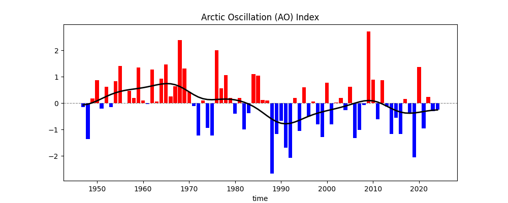
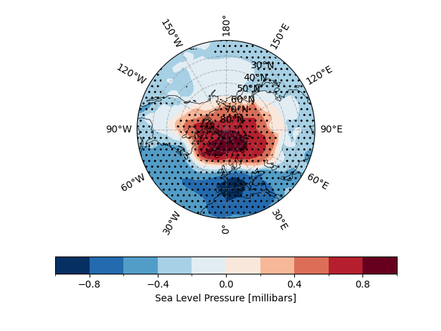

Note
Go to the end to download the full example code.
Arctic Oscillation (AO) Index#
The Arctic Oscillation (AO) Index (or Monthly Northern Hemisphere Annular Mode (NAM) Index) is a key metric used to describe large-scale atmospheric variability in the Northern Hemisphere, particularly influencing mid-to-high latitude weather patterns. It is defined by the leading mode of Empirical Orthogonal Function (EOF) analysis of sea-level pressure (SLP) anomalies north of 20°N. The AO Index quantifies fluctuations in atmospheric pressure between the Arctic and mid-latitudes, with positive and negative phases reflecting distinct circulation patterns. In the positive phase, lower Arctic pressure and higher mid-latitude pressure strengthen westerly winds, confining cold air to polar regions, often leading to milder winters in North America and Europe. The negative phase, with higher Arctic pressure and weaker winds, allows cold air to move southward, causing colder, stormier weather in these regions.
The AO’s role in climate variability is significant, as it modulates temperature and precipitation, especially in winter. The AO Index, typically derived from monthly or seasonal SLP data, reflects the strength of the polar vortex, with positive values indicating a stronger vortex and negative values a weaker one. It is closely linked to the North Atlantic Oscillation (NAO) due to shared variability patterns.
The AO’s fluctuations are driven by internal atmospheric dynamics, stratospheric processes, and external forcings like sea surface temperatures. Its teleconnections make it a critical factor in seasonal weather predictions and long-term climate modeling. In a warming climate, Arctic amplification may alter AO dynamics, making its study essential for understanding future climate trends.
See also
Thompson, D. W. J., & Wallace, J. M. (1998). The Arctic oscillation signature in the wintertime geopotential height and temperature fields. Geophysical Research Letters, 25(9), 1297–1300. https://doi.org/10.1029/98gl00950
Fang, Z., Sun, X., Yang, X.-Q., & Zhu, Z. (2024). Interdecadal variations in the spatial pattern of the Arctic Oscillation Arctic center in wintertime. Geophysical Research Letters, 51, e2024GL111380. https://doi.org/10.1029/2024GL111380
Li, J., and J. X. L. Wang (2003), A modified zonal index and its physical sense, Geophys. Res. Lett., 30, 1632, doi: https://doi.org/10.1029/2003GL017441, 12.
Thompson, D. W. J. , & Wallace, J. M. . (1944). The Arctic oscillation signature in the wintertime geopotential height and temperature fields. Geophys. Res. Lett., doi: https://10.1029/98GL00950
Before proceeding with all the steps, first import some necessary libraries and packages
import easyclimate as ecl
import xarray as xr
import numpy as np
import matplotlib.pyplot as plt
import cartopy.crs as ccrs
Load monthly mean sea level pressure (SLP) data for the Northern Hemisphere The data is read from a NetCDF file containing SLP monthly means
slp_data = xr.open_dataset("slp_monmean_NH.nc").slp
Calculate seasonal mean for December-January-February (DJF) This aggregates the monthly data into winter seasonal means
slp_data_DJF_mean = ecl.calc_seasonal_mean(slp_data, extract_season = 'DJF')
slp_data_DJF_mean
<xarray.DataArray 'slp' (time: 78, lat: 29, lon: 144)> Size: 1MB
array([[[1010.59375, 1010.59375, 1010.59375, ..., 1010.59375,
1010.59375, 1010.59375],
[1010.3125 , 1010.34375, 1010.375 , ..., 1010.28125,
1010.28125, 1010.3125 ],
[1009.53125, 1009.46875, 1009.375 , ..., 1009.75 ,
1009.6875 , 1009.59375],
...,
[1018. , 1017.875 , 1018.84375, ..., 1019.09375,
1018.75 , 1018.28125],
[1016.75 , 1016.75 , 1017.21875, ..., 1017.5625 ,
1017.625 , 1017.1875 ],
[1015.25 , 1015.375 , 1015.28125, ..., 1016.09375,
1016.15625, 1015.71875]],
[[1013.5208 , 1013.5208 , 1013.5208 , ..., 1013.5208 ,
1013.5208 , 1013.5208 ],
[1012.7083 , 1012.7292 , 1012.7708 , ..., 1012.6667 ,
1012.6667 , 1012.6875 ],
[1010.5208 , 1010.4167 , 1010.3125 , ..., 1010.8542 ,
1010.75 , 1010.6042 ],
...
[1018.9583 , 1018.8958 , 1020.0208 , ..., 1019.625 ,
1019.5 , 1019.2083 ],
[1017.5833 , 1017.9375 , 1018.7292 , ..., 1017.8125 ,
1018.1667 , 1017.875 ],
[1016.4167 , 1017.125 , 1017.5208 , ..., 1016.25 ,
1016.6667 , 1016.5208 ]],
[[1013.375 , 1013.375 , 1013.375 , ..., 1013.375 ,
1013.375 , 1013.375 ],
[1011.9375 , 1011.9792 , 1012.0208 , ..., 1011.8333 ,
1011.8542 , 1011.9167 ],
[1010.375 , 1010.3333 , 1010.2917 , ..., 1010.4375 ,
1010.4167 , 1010.375 ],
...,
[1018.7292 , 1018.3958 , 1019.25 , ..., 1019.8125 ,
1019.5833 , 1019.1458 ],
[1017.125 , 1017.0833 , 1017.4792 , ..., 1017.9792 ,
1018.125 , 1017.5833 ],
[1015.7292 , 1016.0417 , 1016.1875 , ..., 1016.125 ,
1016.4375 , 1016.0833 ]]], shape=(78, 29, 144), dtype=float32)
Coordinates:
* lat (lat) float32 116B 90.0 87.5 85.0 82.5 80.0 ... 27.5 25.0 22.5 20.0
* lon (lon) float32 576B 0.0 2.5 5.0 7.5 10.0 ... 350.0 352.5 355.0 357.5
* time (time) datetime64[ns] 624B 1947-12-01 1948-12-01 ... 2024-12-01
Attributes:
long_name: Sea Level Pressure
valid_range: [ 870. 1150.]
units: millibars
precision: 1
var_desc: Sea Level Pressure
level_desc: Sea Level
statistic: Mean
parent_stat: Other
dataset: NCEP Reanalysis Derived Products
actual_range: [ 955.56085 1082.5582 ]- time: 78
- lat: 29
- lon: 144
- 1.011e+03 1.011e+03 1.011e+03 ... 1.016e+03 1.016e+03 1.016e+03
array([[[1010.59375, 1010.59375, 1010.59375, ..., 1010.59375, 1010.59375, 1010.59375], [1010.3125 , 1010.34375, 1010.375 , ..., 1010.28125, 1010.28125, 1010.3125 ], [1009.53125, 1009.46875, 1009.375 , ..., 1009.75 , 1009.6875 , 1009.59375], ..., [1018. , 1017.875 , 1018.84375, ..., 1019.09375, 1018.75 , 1018.28125], [1016.75 , 1016.75 , 1017.21875, ..., 1017.5625 , 1017.625 , 1017.1875 ], [1015.25 , 1015.375 , 1015.28125, ..., 1016.09375, 1016.15625, 1015.71875]], [[1013.5208 , 1013.5208 , 1013.5208 , ..., 1013.5208 , 1013.5208 , 1013.5208 ], [1012.7083 , 1012.7292 , 1012.7708 , ..., 1012.6667 , 1012.6667 , 1012.6875 ], [1010.5208 , 1010.4167 , 1010.3125 , ..., 1010.8542 , 1010.75 , 1010.6042 ], ... [1018.9583 , 1018.8958 , 1020.0208 , ..., 1019.625 , 1019.5 , 1019.2083 ], [1017.5833 , 1017.9375 , 1018.7292 , ..., 1017.8125 , 1018.1667 , 1017.875 ], [1016.4167 , 1017.125 , 1017.5208 , ..., 1016.25 , 1016.6667 , 1016.5208 ]], [[1013.375 , 1013.375 , 1013.375 , ..., 1013.375 , 1013.375 , 1013.375 ], [1011.9375 , 1011.9792 , 1012.0208 , ..., 1011.8333 , 1011.8542 , 1011.9167 ], [1010.375 , 1010.3333 , 1010.2917 , ..., 1010.4375 , 1010.4167 , 1010.375 ], ..., [1018.7292 , 1018.3958 , 1019.25 , ..., 1019.8125 , 1019.5833 , 1019.1458 ], [1017.125 , 1017.0833 , 1017.4792 , ..., 1017.9792 , 1018.125 , 1017.5833 ], [1015.7292 , 1016.0417 , 1016.1875 , ..., 1016.125 , 1016.4375 , 1016.0833 ]]], shape=(78, 29, 144), dtype=float32) - lat(lat)float3290.0 87.5 85.0 ... 25.0 22.5 20.0
- units :
- degrees_north
- actual_range :
- [ 90. -90.]
- long_name :
- Latitude
- standard_name :
- latitude
- axis :
- Y
array([90. , 87.5, 85. , 82.5, 80. , 77.5, 75. , 72.5, 70. , 67.5, 65. , 62.5, 60. , 57.5, 55. , 52.5, 50. , 47.5, 45. , 42.5, 40. , 37.5, 35. , 32.5, 30. , 27.5, 25. , 22.5, 20. ], dtype=float32) - lon(lon)float320.0 2.5 5.0 ... 352.5 355.0 357.5
- units :
- degrees_east
- long_name :
- Longitude
- actual_range :
- [ 0. 357.5]
- standard_name :
- longitude
- axis :
- X
array([ 0. , 2.5, 5. , 7.5, 10. , 12.5, 15. , 17.5, 20. , 22.5, 25. , 27.5, 30. , 32.5, 35. , 37.5, 40. , 42.5, 45. , 47.5, 50. , 52.5, 55. , 57.5, 60. , 62.5, 65. , 67.5, 70. , 72.5, 75. , 77.5, 80. , 82.5, 85. , 87.5, 90. , 92.5, 95. , 97.5, 100. , 102.5, 105. , 107.5, 110. , 112.5, 115. , 117.5, 120. , 122.5, 125. , 127.5, 130. , 132.5, 135. , 137.5, 140. , 142.5, 145. , 147.5, 150. , 152.5, 155. , 157.5, 160. , 162.5, 165. , 167.5, 170. , 172.5, 175. , 177.5, 180. , 182.5, 185. , 187.5, 190. , 192.5, 195. , 197.5, 200. , 202.5, 205. , 207.5, 210. , 212.5, 215. , 217.5, 220. , 222.5, 225. , 227.5, 230. , 232.5, 235. , 237.5, 240. , 242.5, 245. , 247.5, 250. , 252.5, 255. , 257.5, 260. , 262.5, 265. , 267.5, 270. , 272.5, 275. , 277.5, 280. , 282.5, 285. , 287.5, 290. , 292.5, 295. , 297.5, 300. , 302.5, 305. , 307.5, 310. , 312.5, 315. , 317.5, 320. , 322.5, 325. , 327.5, 330. , 332.5, 335. , 337.5, 340. , 342.5, 345. , 347.5, 350. , 352.5, 355. , 357.5], dtype=float32) - time(time)datetime64[ns]1947-12-01 ... 2024-12-01
- long_name :
- Time
- delta_t :
- 0000-01-00 00:00:00
- prev_avg_period :
- 0000-00-01 00:00:00
- standard_name :
- time
- axis :
- T
- actual_range :
- [1297320. 1975200.]
array(['1947-12-01T00:00:00.000000000', '1948-12-01T00:00:00.000000000', '1949-12-01T00:00:00.000000000', '1950-12-01T00:00:00.000000000', '1951-12-01T00:00:00.000000000', '1952-12-01T00:00:00.000000000', '1953-12-01T00:00:00.000000000', '1954-12-01T00:00:00.000000000', '1955-12-01T00:00:00.000000000', '1956-12-01T00:00:00.000000000', '1957-12-01T00:00:00.000000000', '1958-12-01T00:00:00.000000000', '1959-12-01T00:00:00.000000000', '1960-12-01T00:00:00.000000000', '1961-12-01T00:00:00.000000000', '1962-12-01T00:00:00.000000000', '1963-12-01T00:00:00.000000000', '1964-12-01T00:00:00.000000000', '1965-12-01T00:00:00.000000000', '1966-12-01T00:00:00.000000000', '1967-12-01T00:00:00.000000000', '1968-12-01T00:00:00.000000000', '1969-12-01T00:00:00.000000000', '1970-12-01T00:00:00.000000000', '1971-12-01T00:00:00.000000000', '1972-12-01T00:00:00.000000000', '1973-12-01T00:00:00.000000000', '1974-12-01T00:00:00.000000000', '1975-12-01T00:00:00.000000000', '1976-12-01T00:00:00.000000000', '1977-12-01T00:00:00.000000000', '1978-12-01T00:00:00.000000000', '1979-12-01T00:00:00.000000000', '1980-12-01T00:00:00.000000000', '1981-12-01T00:00:00.000000000', '1982-12-01T00:00:00.000000000', '1983-12-01T00:00:00.000000000', '1984-12-01T00:00:00.000000000', '1985-12-01T00:00:00.000000000', '1986-12-01T00:00:00.000000000', '1987-12-01T00:00:00.000000000', '1988-12-01T00:00:00.000000000', '1989-12-01T00:00:00.000000000', '1990-12-01T00:00:00.000000000', '1991-12-01T00:00:00.000000000', '1992-12-01T00:00:00.000000000', '1993-12-01T00:00:00.000000000', '1994-12-01T00:00:00.000000000', '1995-12-01T00:00:00.000000000', '1996-12-01T00:00:00.000000000', '1997-12-01T00:00:00.000000000', '1998-12-01T00:00:00.000000000', '1999-12-01T00:00:00.000000000', '2000-12-01T00:00:00.000000000', '2001-12-01T00:00:00.000000000', '2002-12-01T00:00:00.000000000', '2003-12-01T00:00:00.000000000', '2004-12-01T00:00:00.000000000', '2005-12-01T00:00:00.000000000', '2006-12-01T00:00:00.000000000', '2007-12-01T00:00:00.000000000', '2008-12-01T00:00:00.000000000', '2009-12-01T00:00:00.000000000', '2010-12-01T00:00:00.000000000', '2011-12-01T00:00:00.000000000', '2012-12-01T00:00:00.000000000', '2013-12-01T00:00:00.000000000', '2014-12-01T00:00:00.000000000', '2015-12-01T00:00:00.000000000', '2016-12-01T00:00:00.000000000', '2017-12-01T00:00:00.000000000', '2018-12-01T00:00:00.000000000', '2019-12-01T00:00:00.000000000', '2020-12-01T00:00:00.000000000', '2021-12-01T00:00:00.000000000', '2022-12-01T00:00:00.000000000', '2023-12-01T00:00:00.000000000', '2024-12-01T00:00:00.000000000'], dtype='datetime64[ns]')
- latPandasIndex
PandasIndex(Index([90.0, 87.5, 85.0, 82.5, 80.0, 77.5, 75.0, 72.5, 70.0, 67.5, 65.0, 62.5, 60.0, 57.5, 55.0, 52.5, 50.0, 47.5, 45.0, 42.5, 40.0, 37.5, 35.0, 32.5, 30.0, 27.5, 25.0, 22.5, 20.0], dtype='float32', name='lat')) - lonPandasIndex
PandasIndex(Index([ 0.0, 2.5, 5.0, 7.5, 10.0, 12.5, 15.0, 17.5, 20.0, 22.5, ... 335.0, 337.5, 340.0, 342.5, 345.0, 347.5, 350.0, 352.5, 355.0, 357.5], dtype='float32', name='lon', length=144)) - timePandasIndex
PandasIndex(DatetimeIndex(['1947-12-01', '1948-12-01', '1949-12-01', '1950-12-01', '1951-12-01', '1952-12-01', '1953-12-01', '1954-12-01', '1955-12-01', '1956-12-01', '1957-12-01', '1958-12-01', '1959-12-01', '1960-12-01', '1961-12-01', '1962-12-01', '1963-12-01', '1964-12-01', '1965-12-01', '1966-12-01', '1967-12-01', '1968-12-01', '1969-12-01', '1970-12-01', '1971-12-01', '1972-12-01', '1973-12-01', '1974-12-01', '1975-12-01', '1976-12-01', '1977-12-01', '1978-12-01', '1979-12-01', '1980-12-01', '1981-12-01', '1982-12-01', '1983-12-01', '1984-12-01', '1985-12-01', '1986-12-01', '1987-12-01', '1988-12-01', '1989-12-01', '1990-12-01', '1991-12-01', '1992-12-01', '1993-12-01', '1994-12-01', '1995-12-01', '1996-12-01', '1997-12-01', '1998-12-01', '1999-12-01', '2000-12-01', '2001-12-01', '2002-12-01', '2003-12-01', '2004-12-01', '2005-12-01', '2006-12-01', '2007-12-01', '2008-12-01', '2009-12-01', '2010-12-01', '2011-12-01', '2012-12-01', '2013-12-01', '2014-12-01', '2015-12-01', '2016-12-01', '2017-12-01', '2018-12-01', '2019-12-01', '2020-12-01', '2021-12-01', '2022-12-01', '2023-12-01', '2024-12-01'], dtype='datetime64[ns]', name='time', freq=None))
- long_name :
- Sea Level Pressure
- valid_range :
- [ 870. 1150.]
- units :
- millibars
- precision :
- 1
- var_desc :
- Sea Level Pressure
- level_desc :
- Sea Level
- statistic :
- Mean
- parent_stat :
- Other
- dataset :
- NCEP Reanalysis Derived Products
- actual_range :
- [ 955.56085 1082.5582 ]
Remove the seasonal cycle mean to obtain anomalies This creates anomalies by subtracting the long-term seasonal mean
<xarray.DataArray 'slp' (time: 78, lat: 29, lon: 144)> Size: 1MB
array([[[-2.9290771e+00, -2.9290771e+00, -2.9290771e+00, ...,
-2.9290771e+00, -2.9290771e+00, -2.9290771e+00],
[-2.1723022e+00, -2.1670532e+00, -2.1616821e+00, ...,
-2.1343994e+00, -2.1570435e+00, -2.1476440e+00],
[-1.6235962e+00, -1.5916748e+00, -1.5862427e+00, ...,
-1.6635742e+00, -1.6454468e+00, -1.6486206e+00],
...,
[ 9.3939209e-01, 9.8016357e-01, 1.1361084e+00, ...,
7.1582031e-01, 7.6501465e-01, 8.2513428e-01],
[ 7.7581787e-01, 7.9595947e-01, 9.1125488e-01, ...,
5.8496094e-01, 6.4642334e-01, 7.5500488e-01],
[ 4.8095703e-01, 4.1345215e-01, 3.1811523e-01, ...,
5.7073975e-01, 6.0186768e-01, 5.6518555e-01]],
[[-2.0141602e-03, -2.0141602e-03, -2.0141602e-03, ...,
-2.0141602e-03, -2.0141602e-03, -2.0141602e-03],
[ 2.2351074e-01, 2.1838379e-01, 2.3413086e-01, ...,
2.5103760e-01, 2.2839355e-01, 2.2735596e-01],
[-6.3403320e-01, -6.4373779e-01, -6.4874268e-01, ...,
-5.5938721e-01, -5.8294678e-01, -6.3818359e-01],
...
1.2470703e+00, 1.5150146e+00, 1.7521973e+00],
[ 1.6091309e+00, 1.9834595e+00, 2.4216919e+00, ...,
8.3496094e-01, 1.1881104e+00, 1.4425049e+00],
[ 1.6476440e+00, 2.1634521e+00, 2.5576782e+00, ...,
7.2698975e-01, 1.1123047e+00, 1.3672485e+00]],
[[-1.4782715e-01, -1.4782715e-01, -1.4782715e-01, ...,
-1.4782715e-01, -1.4782715e-01, -1.4782715e-01],
[-5.4730225e-01, -5.3161621e-01, -5.1586914e-01, ...,
-5.8233643e-01, -5.8410645e-01, -5.4345703e-01],
[-7.7984619e-01, -7.2711182e-01, -6.6955566e-01, ...,
-9.7607422e-01, -9.1625977e-01, -8.6737061e-01],
...,
[ 1.6685791e+00, 1.5009766e+00, 1.5423584e+00, ...,
1.4345703e+00, 1.5983276e+00, 1.6896973e+00],
[ 1.1508179e+00, 1.1292725e+00, 1.1716919e+00, ...,
1.0016479e+00, 1.1464233e+00, 1.1508179e+00],
[ 9.6014404e-01, 1.0801392e+00, 1.2243652e+00, ...,
6.0198975e-01, 8.8311768e-01, 9.2974854e-01]]],
shape=(78, 29, 144), dtype=float32)
Coordinates:
* lat (lat) float32 116B 90.0 87.5 85.0 82.5 80.0 ... 27.5 25.0 22.5 20.0
* lon (lon) float32 576B 0.0 2.5 5.0 7.5 10.0 ... 350.0 352.5 355.0 357.5
* time (time) datetime64[ns] 624B 1947-12-01 1948-12-01 ... 2024-12-01
month (time) int64 624B 12 12 12 12 12 12 12 12 ... 12 12 12 12 12 12 12
Attributes:
long_name: Sea Level Pressure
valid_range: [ 870. 1150.]
units: millibars
precision: 1
var_desc: Sea Level Pressure
level_desc: Sea Level
statistic: Mean
parent_stat: Other
dataset: NCEP Reanalysis Derived Products
actual_range: [ 955.56085 1082.5582 ]- time: 78
- lat: 29
- lon: 144
- -2.929 -2.929 -2.929 -2.929 -2.929 ... 0.3812 0.602 0.8831 0.9297
array([[[-2.9290771e+00, -2.9290771e+00, -2.9290771e+00, ..., -2.9290771e+00, -2.9290771e+00, -2.9290771e+00], [-2.1723022e+00, -2.1670532e+00, -2.1616821e+00, ..., -2.1343994e+00, -2.1570435e+00, -2.1476440e+00], [-1.6235962e+00, -1.5916748e+00, -1.5862427e+00, ..., -1.6635742e+00, -1.6454468e+00, -1.6486206e+00], ..., [ 9.3939209e-01, 9.8016357e-01, 1.1361084e+00, ..., 7.1582031e-01, 7.6501465e-01, 8.2513428e-01], [ 7.7581787e-01, 7.9595947e-01, 9.1125488e-01, ..., 5.8496094e-01, 6.4642334e-01, 7.5500488e-01], [ 4.8095703e-01, 4.1345215e-01, 3.1811523e-01, ..., 5.7073975e-01, 6.0186768e-01, 5.6518555e-01]], [[-2.0141602e-03, -2.0141602e-03, -2.0141602e-03, ..., -2.0141602e-03, -2.0141602e-03, -2.0141602e-03], [ 2.2351074e-01, 2.1838379e-01, 2.3413086e-01, ..., 2.5103760e-01, 2.2839355e-01, 2.2735596e-01], [-6.3403320e-01, -6.4373779e-01, -6.4874268e-01, ..., -5.5938721e-01, -5.8294678e-01, -6.3818359e-01], ... 1.2470703e+00, 1.5150146e+00, 1.7521973e+00], [ 1.6091309e+00, 1.9834595e+00, 2.4216919e+00, ..., 8.3496094e-01, 1.1881104e+00, 1.4425049e+00], [ 1.6476440e+00, 2.1634521e+00, 2.5576782e+00, ..., 7.2698975e-01, 1.1123047e+00, 1.3672485e+00]], [[-1.4782715e-01, -1.4782715e-01, -1.4782715e-01, ..., -1.4782715e-01, -1.4782715e-01, -1.4782715e-01], [-5.4730225e-01, -5.3161621e-01, -5.1586914e-01, ..., -5.8233643e-01, -5.8410645e-01, -5.4345703e-01], [-7.7984619e-01, -7.2711182e-01, -6.6955566e-01, ..., -9.7607422e-01, -9.1625977e-01, -8.6737061e-01], ..., [ 1.6685791e+00, 1.5009766e+00, 1.5423584e+00, ..., 1.4345703e+00, 1.5983276e+00, 1.6896973e+00], [ 1.1508179e+00, 1.1292725e+00, 1.1716919e+00, ..., 1.0016479e+00, 1.1464233e+00, 1.1508179e+00], [ 9.6014404e-01, 1.0801392e+00, 1.2243652e+00, ..., 6.0198975e-01, 8.8311768e-01, 9.2974854e-01]]], shape=(78, 29, 144), dtype=float32) - lat(lat)float3290.0 87.5 85.0 ... 25.0 22.5 20.0
- units :
- degrees_north
- actual_range :
- [ 90. -90.]
- long_name :
- Latitude
- standard_name :
- latitude
- axis :
- Y
array([90. , 87.5, 85. , 82.5, 80. , 77.5, 75. , 72.5, 70. , 67.5, 65. , 62.5, 60. , 57.5, 55. , 52.5, 50. , 47.5, 45. , 42.5, 40. , 37.5, 35. , 32.5, 30. , 27.5, 25. , 22.5, 20. ], dtype=float32) - lon(lon)float320.0 2.5 5.0 ... 352.5 355.0 357.5
- units :
- degrees_east
- long_name :
- Longitude
- actual_range :
- [ 0. 357.5]
- standard_name :
- longitude
- axis :
- X
array([ 0. , 2.5, 5. , 7.5, 10. , 12.5, 15. , 17.5, 20. , 22.5, 25. , 27.5, 30. , 32.5, 35. , 37.5, 40. , 42.5, 45. , 47.5, 50. , 52.5, 55. , 57.5, 60. , 62.5, 65. , 67.5, 70. , 72.5, 75. , 77.5, 80. , 82.5, 85. , 87.5, 90. , 92.5, 95. , 97.5, 100. , 102.5, 105. , 107.5, 110. , 112.5, 115. , 117.5, 120. , 122.5, 125. , 127.5, 130. , 132.5, 135. , 137.5, 140. , 142.5, 145. , 147.5, 150. , 152.5, 155. , 157.5, 160. , 162.5, 165. , 167.5, 170. , 172.5, 175. , 177.5, 180. , 182.5, 185. , 187.5, 190. , 192.5, 195. , 197.5, 200. , 202.5, 205. , 207.5, 210. , 212.5, 215. , 217.5, 220. , 222.5, 225. , 227.5, 230. , 232.5, 235. , 237.5, 240. , 242.5, 245. , 247.5, 250. , 252.5, 255. , 257.5, 260. , 262.5, 265. , 267.5, 270. , 272.5, 275. , 277.5, 280. , 282.5, 285. , 287.5, 290. , 292.5, 295. , 297.5, 300. , 302.5, 305. , 307.5, 310. , 312.5, 315. , 317.5, 320. , 322.5, 325. , 327.5, 330. , 332.5, 335. , 337.5, 340. , 342.5, 345. , 347.5, 350. , 352.5, 355. , 357.5], dtype=float32) - time(time)datetime64[ns]1947-12-01 ... 2024-12-01
- long_name :
- Time
- delta_t :
- 0000-01-00 00:00:00
- prev_avg_period :
- 0000-00-01 00:00:00
- standard_name :
- time
- axis :
- T
- actual_range :
- [1297320. 1975200.]
array(['1947-12-01T00:00:00.000000000', '1948-12-01T00:00:00.000000000', '1949-12-01T00:00:00.000000000', '1950-12-01T00:00:00.000000000', '1951-12-01T00:00:00.000000000', '1952-12-01T00:00:00.000000000', '1953-12-01T00:00:00.000000000', '1954-12-01T00:00:00.000000000', '1955-12-01T00:00:00.000000000', '1956-12-01T00:00:00.000000000', '1957-12-01T00:00:00.000000000', '1958-12-01T00:00:00.000000000', '1959-12-01T00:00:00.000000000', '1960-12-01T00:00:00.000000000', '1961-12-01T00:00:00.000000000', '1962-12-01T00:00:00.000000000', '1963-12-01T00:00:00.000000000', '1964-12-01T00:00:00.000000000', '1965-12-01T00:00:00.000000000', '1966-12-01T00:00:00.000000000', '1967-12-01T00:00:00.000000000', '1968-12-01T00:00:00.000000000', '1969-12-01T00:00:00.000000000', '1970-12-01T00:00:00.000000000', '1971-12-01T00:00:00.000000000', '1972-12-01T00:00:00.000000000', '1973-12-01T00:00:00.000000000', '1974-12-01T00:00:00.000000000', '1975-12-01T00:00:00.000000000', '1976-12-01T00:00:00.000000000', '1977-12-01T00:00:00.000000000', '1978-12-01T00:00:00.000000000', '1979-12-01T00:00:00.000000000', '1980-12-01T00:00:00.000000000', '1981-12-01T00:00:00.000000000', '1982-12-01T00:00:00.000000000', '1983-12-01T00:00:00.000000000', '1984-12-01T00:00:00.000000000', '1985-12-01T00:00:00.000000000', '1986-12-01T00:00:00.000000000', '1987-12-01T00:00:00.000000000', '1988-12-01T00:00:00.000000000', '1989-12-01T00:00:00.000000000', '1990-12-01T00:00:00.000000000', '1991-12-01T00:00:00.000000000', '1992-12-01T00:00:00.000000000', '1993-12-01T00:00:00.000000000', '1994-12-01T00:00:00.000000000', '1995-12-01T00:00:00.000000000', '1996-12-01T00:00:00.000000000', '1997-12-01T00:00:00.000000000', '1998-12-01T00:00:00.000000000', '1999-12-01T00:00:00.000000000', '2000-12-01T00:00:00.000000000', '2001-12-01T00:00:00.000000000', '2002-12-01T00:00:00.000000000', '2003-12-01T00:00:00.000000000', '2004-12-01T00:00:00.000000000', '2005-12-01T00:00:00.000000000', '2006-12-01T00:00:00.000000000', '2007-12-01T00:00:00.000000000', '2008-12-01T00:00:00.000000000', '2009-12-01T00:00:00.000000000', '2010-12-01T00:00:00.000000000', '2011-12-01T00:00:00.000000000', '2012-12-01T00:00:00.000000000', '2013-12-01T00:00:00.000000000', '2014-12-01T00:00:00.000000000', '2015-12-01T00:00:00.000000000', '2016-12-01T00:00:00.000000000', '2017-12-01T00:00:00.000000000', '2018-12-01T00:00:00.000000000', '2019-12-01T00:00:00.000000000', '2020-12-01T00:00:00.000000000', '2021-12-01T00:00:00.000000000', '2022-12-01T00:00:00.000000000', '2023-12-01T00:00:00.000000000', '2024-12-01T00:00:00.000000000'], dtype='datetime64[ns]') - month(time)int6412 12 12 12 12 ... 12 12 12 12 12
- long_name :
- Time
- delta_t :
- 0000-01-00 00:00:00
- prev_avg_period :
- 0000-00-01 00:00:00
- standard_name :
- time
- axis :
- T
- actual_range :
- [1297320. 1975200.]
array([12, 12, 12, 12, 12, 12, 12, 12, 12, 12, 12, 12, 12, 12, 12, 12, 12, 12, 12, 12, 12, 12, 12, 12, 12, 12, 12, 12, 12, 12, 12, 12, 12, 12, 12, 12, 12, 12, 12, 12, 12, 12, 12, 12, 12, 12, 12, 12, 12, 12, 12, 12, 12, 12, 12, 12, 12, 12, 12, 12, 12, 12, 12, 12, 12, 12, 12, 12, 12, 12, 12, 12, 12, 12, 12, 12, 12, 12])
- latPandasIndex
PandasIndex(Index([90.0, 87.5, 85.0, 82.5, 80.0, 77.5, 75.0, 72.5, 70.0, 67.5, 65.0, 62.5, 60.0, 57.5, 55.0, 52.5, 50.0, 47.5, 45.0, 42.5, 40.0, 37.5, 35.0, 32.5, 30.0, 27.5, 25.0, 22.5, 20.0], dtype='float32', name='lat')) - lonPandasIndex
PandasIndex(Index([ 0.0, 2.5, 5.0, 7.5, 10.0, 12.5, 15.0, 17.5, 20.0, 22.5, ... 335.0, 337.5, 340.0, 342.5, 345.0, 347.5, 350.0, 352.5, 355.0, 357.5], dtype='float32', name='lon', length=144)) - timePandasIndex
PandasIndex(DatetimeIndex(['1947-12-01', '1948-12-01', '1949-12-01', '1950-12-01', '1951-12-01', '1952-12-01', '1953-12-01', '1954-12-01', '1955-12-01', '1956-12-01', '1957-12-01', '1958-12-01', '1959-12-01', '1960-12-01', '1961-12-01', '1962-12-01', '1963-12-01', '1964-12-01', '1965-12-01', '1966-12-01', '1967-12-01', '1968-12-01', '1969-12-01', '1970-12-01', '1971-12-01', '1972-12-01', '1973-12-01', '1974-12-01', '1975-12-01', '1976-12-01', '1977-12-01', '1978-12-01', '1979-12-01', '1980-12-01', '1981-12-01', '1982-12-01', '1983-12-01', '1984-12-01', '1985-12-01', '1986-12-01', '1987-12-01', '1988-12-01', '1989-12-01', '1990-12-01', '1991-12-01', '1992-12-01', '1993-12-01', '1994-12-01', '1995-12-01', '1996-12-01', '1997-12-01', '1998-12-01', '1999-12-01', '2000-12-01', '2001-12-01', '2002-12-01', '2003-12-01', '2004-12-01', '2005-12-01', '2006-12-01', '2007-12-01', '2008-12-01', '2009-12-01', '2010-12-01', '2011-12-01', '2012-12-01', '2013-12-01', '2014-12-01', '2015-12-01', '2016-12-01', '2017-12-01', '2018-12-01', '2019-12-01', '2020-12-01', '2021-12-01', '2022-12-01', '2023-12-01', '2024-12-01'], dtype='datetime64[ns]', name='time', freq=None))
- long_name :
- Sea Level Pressure
- valid_range :
- [ 870. 1150.]
- units :
- millibars
- precision :
- 1
- var_desc :
- Sea Level Pressure
- level_desc :
- Sea Level
- statistic :
- Mean
- parent_stat :
- Other
- dataset :
- NCEP Reanalysis Derived Products
- actual_range :
- [ 955.56085 1082.5582 ]
Calculate Arctic Oscillation (AO) index using EOF method (Thompson & Wallace 1998) This performs EOF analysis on SLP anomalies north of 20°N to derive the AO index
<xarray.DataArray 'PC' (time: 78)> Size: 624B
array([-0.13789273, -1.36136224, 0.17735619, 0.88062118, -0.2129353 ,
0.61538168, -0.14617055, 0.82448838, 1.40803593, 0.01084501,
0.46198938, 0.20336214, 1.34985511, 0.09407199, -0.03657216,
1.26591141, 0.06100193, 0.92674357, 1.47341691, 0.25968394,
0.64145145, 2.39791578, 1.30622444, 0.42497478, -0.10463684,
-1.2214392 , 0.09991508, -0.93211804, -1.22233623, 2.0083876 ,
0.56243371, 1.07133185, 0.20556959, -0.39572587, 0.19810533,
-0.99517237, -0.37496718, 1.10574761, 1.04859641, 0.12535887,
0.10322009, -2.66546857, -1.16177425, -0.662752 , -1.67955732,
-2.06468711, 0.1944445 , -1.04616313, 0.59380495, -0.50431692,
0.06580437, -0.79229132, -1.28876489, 0.77994097, -0.80616942,
0.01642609, 0.19134825, -0.25406337, 0.62810255, -1.32004343,
-1.01681461, -0.07190612, 2.71685131, 0.88742413, -0.59954162,
0.86927108, -0.13355856, -1.16031679, -0.54596922, -1.17149519,
0.1642507 , -0.39054768, -2.05494313, 1.3799055 , -0.95251467,
0.23287031, -0.29608713, -0.25139045])
Coordinates:
* time (time) datetime64[ns] 624B 1947-12-01 1948-12-01 ... 2024-12-01
Attributes: (12/15)
model: EOF analysis
software: xeofs
version: 3.0.4
date: 2025-07-24 07:28:40
n_modes: 2
center: False
... ...
sample_name: sample
feature_name: feature
random_state: None
compute: True
solver: auto
solver_kwargs: {}- time: 78
- -0.1379 -1.361 0.1774 0.8806 ... -0.9525 0.2329 -0.2961 -0.2514
array([-0.13789273, -1.36136224, 0.17735619, 0.88062118, -0.2129353 , 0.61538168, -0.14617055, 0.82448838, 1.40803593, 0.01084501, 0.46198938, 0.20336214, 1.34985511, 0.09407199, -0.03657216, 1.26591141, 0.06100193, 0.92674357, 1.47341691, 0.25968394, 0.64145145, 2.39791578, 1.30622444, 0.42497478, -0.10463684, -1.2214392 , 0.09991508, -0.93211804, -1.22233623, 2.0083876 , 0.56243371, 1.07133185, 0.20556959, -0.39572587, 0.19810533, -0.99517237, -0.37496718, 1.10574761, 1.04859641, 0.12535887, 0.10322009, -2.66546857, -1.16177425, -0.662752 , -1.67955732, -2.06468711, 0.1944445 , -1.04616313, 0.59380495, -0.50431692, 0.06580437, -0.79229132, -1.28876489, 0.77994097, -0.80616942, 0.01642609, 0.19134825, -0.25406337, 0.62810255, -1.32004343, -1.01681461, -0.07190612, 2.71685131, 0.88742413, -0.59954162, 0.86927108, -0.13355856, -1.16031679, -0.54596922, -1.17149519, 0.1642507 , -0.39054768, -2.05494313, 1.3799055 , -0.95251467, 0.23287031, -0.29608713, -0.25139045]) - time(time)datetime64[ns]1947-12-01 ... 2024-12-01
- long_name :
- Time
- delta_t :
- 0000-01-00 00:00:00
- prev_avg_period :
- 0000-00-01 00:00:00
- standard_name :
- time
- axis :
- T
- actual_range :
- [1297320. 1975200.]
array(['1947-12-01T00:00:00.000000000', '1948-12-01T00:00:00.000000000', '1949-12-01T00:00:00.000000000', '1950-12-01T00:00:00.000000000', '1951-12-01T00:00:00.000000000', '1952-12-01T00:00:00.000000000', '1953-12-01T00:00:00.000000000', '1954-12-01T00:00:00.000000000', '1955-12-01T00:00:00.000000000', '1956-12-01T00:00:00.000000000', '1957-12-01T00:00:00.000000000', '1958-12-01T00:00:00.000000000', '1959-12-01T00:00:00.000000000', '1960-12-01T00:00:00.000000000', '1961-12-01T00:00:00.000000000', '1962-12-01T00:00:00.000000000', '1963-12-01T00:00:00.000000000', '1964-12-01T00:00:00.000000000', '1965-12-01T00:00:00.000000000', '1966-12-01T00:00:00.000000000', '1967-12-01T00:00:00.000000000', '1968-12-01T00:00:00.000000000', '1969-12-01T00:00:00.000000000', '1970-12-01T00:00:00.000000000', '1971-12-01T00:00:00.000000000', '1972-12-01T00:00:00.000000000', '1973-12-01T00:00:00.000000000', '1974-12-01T00:00:00.000000000', '1975-12-01T00:00:00.000000000', '1976-12-01T00:00:00.000000000', '1977-12-01T00:00:00.000000000', '1978-12-01T00:00:00.000000000', '1979-12-01T00:00:00.000000000', '1980-12-01T00:00:00.000000000', '1981-12-01T00:00:00.000000000', '1982-12-01T00:00:00.000000000', '1983-12-01T00:00:00.000000000', '1984-12-01T00:00:00.000000000', '1985-12-01T00:00:00.000000000', '1986-12-01T00:00:00.000000000', '1987-12-01T00:00:00.000000000', '1988-12-01T00:00:00.000000000', '1989-12-01T00:00:00.000000000', '1990-12-01T00:00:00.000000000', '1991-12-01T00:00:00.000000000', '1992-12-01T00:00:00.000000000', '1993-12-01T00:00:00.000000000', '1994-12-01T00:00:00.000000000', '1995-12-01T00:00:00.000000000', '1996-12-01T00:00:00.000000000', '1997-12-01T00:00:00.000000000', '1998-12-01T00:00:00.000000000', '1999-12-01T00:00:00.000000000', '2000-12-01T00:00:00.000000000', '2001-12-01T00:00:00.000000000', '2002-12-01T00:00:00.000000000', '2003-12-01T00:00:00.000000000', '2004-12-01T00:00:00.000000000', '2005-12-01T00:00:00.000000000', '2006-12-01T00:00:00.000000000', '2007-12-01T00:00:00.000000000', '2008-12-01T00:00:00.000000000', '2009-12-01T00:00:00.000000000', '2010-12-01T00:00:00.000000000', '2011-12-01T00:00:00.000000000', '2012-12-01T00:00:00.000000000', '2013-12-01T00:00:00.000000000', '2014-12-01T00:00:00.000000000', '2015-12-01T00:00:00.000000000', '2016-12-01T00:00:00.000000000', '2017-12-01T00:00:00.000000000', '2018-12-01T00:00:00.000000000', '2019-12-01T00:00:00.000000000', '2020-12-01T00:00:00.000000000', '2021-12-01T00:00:00.000000000', '2022-12-01T00:00:00.000000000', '2023-12-01T00:00:00.000000000', '2024-12-01T00:00:00.000000000'], dtype='datetime64[ns]')
- timePandasIndex
PandasIndex(DatetimeIndex(['1947-12-01', '1948-12-01', '1949-12-01', '1950-12-01', '1951-12-01', '1952-12-01', '1953-12-01', '1954-12-01', '1955-12-01', '1956-12-01', '1957-12-01', '1958-12-01', '1959-12-01', '1960-12-01', '1961-12-01', '1962-12-01', '1963-12-01', '1964-12-01', '1965-12-01', '1966-12-01', '1967-12-01', '1968-12-01', '1969-12-01', '1970-12-01', '1971-12-01', '1972-12-01', '1973-12-01', '1974-12-01', '1975-12-01', '1976-12-01', '1977-12-01', '1978-12-01', '1979-12-01', '1980-12-01', '1981-12-01', '1982-12-01', '1983-12-01', '1984-12-01', '1985-12-01', '1986-12-01', '1987-12-01', '1988-12-01', '1989-12-01', '1990-12-01', '1991-12-01', '1992-12-01', '1993-12-01', '1994-12-01', '1995-12-01', '1996-12-01', '1997-12-01', '1998-12-01', '1999-12-01', '2000-12-01', '2001-12-01', '2002-12-01', '2003-12-01', '2004-12-01', '2005-12-01', '2006-12-01', '2007-12-01', '2008-12-01', '2009-12-01', '2010-12-01', '2011-12-01', '2012-12-01', '2013-12-01', '2014-12-01', '2015-12-01', '2016-12-01', '2017-12-01', '2018-12-01', '2019-12-01', '2020-12-01', '2021-12-01', '2022-12-01', '2023-12-01', '2024-12-01'], dtype='datetime64[ns]', name='time', freq=None))
- model :
- EOF analysis
- software :
- xeofs
- version :
- 3.0.4
- date :
- 2025-07-24 07:28:40
- n_modes :
- 2
- center :
- False
- standardize :
- False
- use_coslat :
- True
- check_nans :
- True
- sample_name :
- sample
- feature_name :
- feature
- random_state :
- None
- compute :
- True
- solver :
- auto
- solver_kwargs :
- {}
Calculate AO index using zonal mean SLP difference method (Li & Wang 2003) This computes the index as the normalized difference between 35°N and 65°N SLP
<xarray.DataArray 'slp' (time: 78)> Size: 312B
array([ 0.8052499 , 4.3634815 , -1.2605035 , -1.710156 , 1.578033 ,
-1.2090005 , -0.54754215, -2.2022023 , -6.9559655 , -1.3279245 ,
-0.99068666, -1.1872978 , -2.9158869 , -0.3270552 , -2.2568872 ,
-6.8076696 , -0.19597752, -4.6988726 , -3.151997 , -0.8766823 ,
-5.060997 , -9.11583 , -3.7444484 , -2.8222766 , -0.8740756 ,
3.1170976 , -0.6909201 , 2.2488987 , 2.1816232 , -4.2153635 ,
-2.1912057 , -1.6460643 , -1.8050665 , -1.5291634 , -0.57734895,
3.215914 , 0.3315078 , -3.9433742 , -1.9367197 , 1.4089097 ,
2.2672746 , 8.049681 , 5.3112535 , 1.4390047 , 4.7700214 ,
5.5418687 , 0.7047738 , 2.9371235 , -3.1138027 , 1.4530386 ,
0.63142395, 3.588745 , 4.384025 , -0.5550656 , 3.6181107 ,
-0.16198307, -0.07054477, -2.0740209 , -2.7117517 , 6.165711 ,
3.8844595 , -0.4756385 , -9.488225 , -4.8299484 , 1.9110786 ,
-1.359751 , 2.1388004 , 2.7669818 , 4.5657372 , 2.4385693 ,
0.44942093, 1.6947916 , 8.040273 , -0.79522365, 2.7276301 ,
0.08425861, 1.8951628 , 1.7004323 ], dtype=float32)
Coordinates:
* time (time) datetime64[ns] 624B 1947-12-01 1948-12-01 ... 2024-12-01
month (time) int64 624B 12 12 12 12 12 12 12 12 ... 12 12 12 12 12 12 12
Attributes:
long_name: Sea Level Pressure
valid_range: [ 870. 1150.]
units: millibars
precision: 1
var_desc: Sea Level Pressure
level_desc: Sea Level
statistic: Mean
parent_stat: Other
dataset: NCEP Reanalysis Derived Products
actual_range: [ 955.56085 1082.5582 ]- time: 78
- 0.8052 4.363 -1.261 -1.71 1.578 ... -0.7952 2.728 0.08426 1.895 1.7
array([ 0.8052499 , 4.3634815 , -1.2605035 , -1.710156 , 1.578033 , -1.2090005 , -0.54754215, -2.2022023 , -6.9559655 , -1.3279245 , -0.99068666, -1.1872978 , -2.9158869 , -0.3270552 , -2.2568872 , -6.8076696 , -0.19597752, -4.6988726 , -3.151997 , -0.8766823 , -5.060997 , -9.11583 , -3.7444484 , -2.8222766 , -0.8740756 , 3.1170976 , -0.6909201 , 2.2488987 , 2.1816232 , -4.2153635 , -2.1912057 , -1.6460643 , -1.8050665 , -1.5291634 , -0.57734895, 3.215914 , 0.3315078 , -3.9433742 , -1.9367197 , 1.4089097 , 2.2672746 , 8.049681 , 5.3112535 , 1.4390047 , 4.7700214 , 5.5418687 , 0.7047738 , 2.9371235 , -3.1138027 , 1.4530386 , 0.63142395, 3.588745 , 4.384025 , -0.5550656 , 3.6181107 , -0.16198307, -0.07054477, -2.0740209 , -2.7117517 , 6.165711 , 3.8844595 , -0.4756385 , -9.488225 , -4.8299484 , 1.9110786 , -1.359751 , 2.1388004 , 2.7669818 , 4.5657372 , 2.4385693 , 0.44942093, 1.6947916 , 8.040273 , -0.79522365, 2.7276301 , 0.08425861, 1.8951628 , 1.7004323 ], dtype=float32) - time(time)datetime64[ns]1947-12-01 ... 2024-12-01
- long_name :
- Time
- delta_t :
- 0000-01-00 00:00:00
- prev_avg_period :
- 0000-00-01 00:00:00
- standard_name :
- time
- axis :
- T
- actual_range :
- [1297320. 1975200.]
array(['1947-12-01T00:00:00.000000000', '1948-12-01T00:00:00.000000000', '1949-12-01T00:00:00.000000000', '1950-12-01T00:00:00.000000000', '1951-12-01T00:00:00.000000000', '1952-12-01T00:00:00.000000000', '1953-12-01T00:00:00.000000000', '1954-12-01T00:00:00.000000000', '1955-12-01T00:00:00.000000000', '1956-12-01T00:00:00.000000000', '1957-12-01T00:00:00.000000000', '1958-12-01T00:00:00.000000000', '1959-12-01T00:00:00.000000000', '1960-12-01T00:00:00.000000000', '1961-12-01T00:00:00.000000000', '1962-12-01T00:00:00.000000000', '1963-12-01T00:00:00.000000000', '1964-12-01T00:00:00.000000000', '1965-12-01T00:00:00.000000000', '1966-12-01T00:00:00.000000000', '1967-12-01T00:00:00.000000000', '1968-12-01T00:00:00.000000000', '1969-12-01T00:00:00.000000000', '1970-12-01T00:00:00.000000000', '1971-12-01T00:00:00.000000000', '1972-12-01T00:00:00.000000000', '1973-12-01T00:00:00.000000000', '1974-12-01T00:00:00.000000000', '1975-12-01T00:00:00.000000000', '1976-12-01T00:00:00.000000000', '1977-12-01T00:00:00.000000000', '1978-12-01T00:00:00.000000000', '1979-12-01T00:00:00.000000000', '1980-12-01T00:00:00.000000000', '1981-12-01T00:00:00.000000000', '1982-12-01T00:00:00.000000000', '1983-12-01T00:00:00.000000000', '1984-12-01T00:00:00.000000000', '1985-12-01T00:00:00.000000000', '1986-12-01T00:00:00.000000000', '1987-12-01T00:00:00.000000000', '1988-12-01T00:00:00.000000000', '1989-12-01T00:00:00.000000000', '1990-12-01T00:00:00.000000000', '1991-12-01T00:00:00.000000000', '1992-12-01T00:00:00.000000000', '1993-12-01T00:00:00.000000000', '1994-12-01T00:00:00.000000000', '1995-12-01T00:00:00.000000000', '1996-12-01T00:00:00.000000000', '1997-12-01T00:00:00.000000000', '1998-12-01T00:00:00.000000000', '1999-12-01T00:00:00.000000000', '2000-12-01T00:00:00.000000000', '2001-12-01T00:00:00.000000000', '2002-12-01T00:00:00.000000000', '2003-12-01T00:00:00.000000000', '2004-12-01T00:00:00.000000000', '2005-12-01T00:00:00.000000000', '2006-12-01T00:00:00.000000000', '2007-12-01T00:00:00.000000000', '2008-12-01T00:00:00.000000000', '2009-12-01T00:00:00.000000000', '2010-12-01T00:00:00.000000000', '2011-12-01T00:00:00.000000000', '2012-12-01T00:00:00.000000000', '2013-12-01T00:00:00.000000000', '2014-12-01T00:00:00.000000000', '2015-12-01T00:00:00.000000000', '2016-12-01T00:00:00.000000000', '2017-12-01T00:00:00.000000000', '2018-12-01T00:00:00.000000000', '2019-12-01T00:00:00.000000000', '2020-12-01T00:00:00.000000000', '2021-12-01T00:00:00.000000000', '2022-12-01T00:00:00.000000000', '2023-12-01T00:00:00.000000000', '2024-12-01T00:00:00.000000000'], dtype='datetime64[ns]') - month(time)int6412 12 12 12 12 ... 12 12 12 12 12
- long_name :
- Time
- delta_t :
- 0000-01-00 00:00:00
- prev_avg_period :
- 0000-00-01 00:00:00
- standard_name :
- time
- axis :
- T
- actual_range :
- [1297320. 1975200.]
array([12, 12, 12, 12, 12, 12, 12, 12, 12, 12, 12, 12, 12, 12, 12, 12, 12, 12, 12, 12, 12, 12, 12, 12, 12, 12, 12, 12, 12, 12, 12, 12, 12, 12, 12, 12, 12, 12, 12, 12, 12, 12, 12, 12, 12, 12, 12, 12, 12, 12, 12, 12, 12, 12, 12, 12, 12, 12, 12, 12, 12, 12, 12, 12, 12, 12, 12, 12, 12, 12, 12, 12, 12, 12, 12, 12, 12, 12])
- timePandasIndex
PandasIndex(DatetimeIndex(['1947-12-01', '1948-12-01', '1949-12-01', '1950-12-01', '1951-12-01', '1952-12-01', '1953-12-01', '1954-12-01', '1955-12-01', '1956-12-01', '1957-12-01', '1958-12-01', '1959-12-01', '1960-12-01', '1961-12-01', '1962-12-01', '1963-12-01', '1964-12-01', '1965-12-01', '1966-12-01', '1967-12-01', '1968-12-01', '1969-12-01', '1970-12-01', '1971-12-01', '1972-12-01', '1973-12-01', '1974-12-01', '1975-12-01', '1976-12-01', '1977-12-01', '1978-12-01', '1979-12-01', '1980-12-01', '1981-12-01', '1982-12-01', '1983-12-01', '1984-12-01', '1985-12-01', '1986-12-01', '1987-12-01', '1988-12-01', '1989-12-01', '1990-12-01', '1991-12-01', '1992-12-01', '1993-12-01', '1994-12-01', '1995-12-01', '1996-12-01', '1997-12-01', '1998-12-01', '1999-12-01', '2000-12-01', '2001-12-01', '2002-12-01', '2003-12-01', '2004-12-01', '2005-12-01', '2006-12-01', '2007-12-01', '2008-12-01', '2009-12-01', '2010-12-01', '2011-12-01', '2012-12-01', '2013-12-01', '2014-12-01', '2015-12-01', '2016-12-01', '2017-12-01', '2018-12-01', '2019-12-01', '2020-12-01', '2021-12-01', '2022-12-01', '2023-12-01', '2024-12-01'], dtype='datetime64[ns]', name='time', freq=None))
- long_name :
- Sea Level Pressure
- valid_range :
- [ 870. 1150.]
- units :
- millibars
- precision :
- 1
- var_desc :
- Sea Level Pressure
- level_desc :
- Sea Level
- statistic :
- Mean
- parent_stat :
- Other
- dataset :
- NCEP Reanalysis Derived Products
- actual_range :
- [ 955.56085 1082.5582 ]
Calculate correlation between the two AO index calculation methods Shows how well the two different methods agree in capturing AO variability
array([[ 1. , -0.91460804],
[-0.91460804, 1. ]])
Apply Gaussian filter to smooth the AO index time series Uses a 9-month window to highlight lower-frequency variations
index_ao_filtered = ecl.filter.calc_gaussian_filter(index_ao, window_length=9)
index_ao_filtered
<xarray.DataArray (time: 78)> Size: 624B
array([-0.06684012, -0.03738386, 0.01740327, 0.0902167 , 0.17215534,
0.25441799, 0.32989301, 0.39384404, 0.44455718, 0.48298112,
0.51213765, 0.53648328, 0.56049485, 0.58791096, 0.62065395,
0.657719 , 0.69528552, 0.72658512, 0.74295929, 0.73589188,
0.69922804, 0.63170361, 0.53858446, 0.4312157 , 0.32488131,
0.2348372 , 0.17173515, 0.13904575, 0.13214965, 0.14070868,
0.15245402, 0.15722669, 0.14900611, 0.12585784, 0.08784106,
0.03482265, -0.03490786, -0.12356304, -0.23133062, -0.35423373,
-0.4826228 , -0.60257186, -0.69918375, -0.76041284, -0.78070406,
-0.76195968, -0.71237885, -0.64386572, -0.56851125, -0.49566789,
-0.43049288, -0.37428554, -0.32574092, -0.28226979, -0.24113723,
-0.19974644, -0.15587431, -0.10784048, -0.05542158, -0.00119777,
0.04903026, 0.08649593, 0.10179069, 0.08803279, 0.04338423,
-0.02733525, -0.1138375 , -0.20257341, -0.28068094, -0.33844134,
-0.37116568, -0.3795721 , -0.36828661, -0.34435419, -0.31530194,
-0.28771077, -0.26673484, -0.25550605])
Coordinates:
* time (time) datetime64[ns] 624B 1947-12-01 1948-12-01 ... 2024-12-01- time: 78
- -0.06684 -0.03738 0.0174 0.09022 ... -0.3153 -0.2877 -0.2667 -0.2555
array([-0.06684012, -0.03738386, 0.01740327, 0.0902167 , 0.17215534, 0.25441799, 0.32989301, 0.39384404, 0.44455718, 0.48298112, 0.51213765, 0.53648328, 0.56049485, 0.58791096, 0.62065395, 0.657719 , 0.69528552, 0.72658512, 0.74295929, 0.73589188, 0.69922804, 0.63170361, 0.53858446, 0.4312157 , 0.32488131, 0.2348372 , 0.17173515, 0.13904575, 0.13214965, 0.14070868, 0.15245402, 0.15722669, 0.14900611, 0.12585784, 0.08784106, 0.03482265, -0.03490786, -0.12356304, -0.23133062, -0.35423373, -0.4826228 , -0.60257186, -0.69918375, -0.76041284, -0.78070406, -0.76195968, -0.71237885, -0.64386572, -0.56851125, -0.49566789, -0.43049288, -0.37428554, -0.32574092, -0.28226979, -0.24113723, -0.19974644, -0.15587431, -0.10784048, -0.05542158, -0.00119777, 0.04903026, 0.08649593, 0.10179069, 0.08803279, 0.04338423, -0.02733525, -0.1138375 , -0.20257341, -0.28068094, -0.33844134, -0.37116568, -0.3795721 , -0.36828661, -0.34435419, -0.31530194, -0.28771077, -0.26673484, -0.25550605]) - time(time)datetime64[ns]1947-12-01 ... 2024-12-01
- long_name :
- Time
- delta_t :
- 0000-01-00 00:00:00
- prev_avg_period :
- 0000-00-01 00:00:00
- standard_name :
- time
- axis :
- T
- actual_range :
- [1297320. 1975200.]
array(['1947-12-01T00:00:00.000000000', '1948-12-01T00:00:00.000000000', '1949-12-01T00:00:00.000000000', '1950-12-01T00:00:00.000000000', '1951-12-01T00:00:00.000000000', '1952-12-01T00:00:00.000000000', '1953-12-01T00:00:00.000000000', '1954-12-01T00:00:00.000000000', '1955-12-01T00:00:00.000000000', '1956-12-01T00:00:00.000000000', '1957-12-01T00:00:00.000000000', '1958-12-01T00:00:00.000000000', '1959-12-01T00:00:00.000000000', '1960-12-01T00:00:00.000000000', '1961-12-01T00:00:00.000000000', '1962-12-01T00:00:00.000000000', '1963-12-01T00:00:00.000000000', '1964-12-01T00:00:00.000000000', '1965-12-01T00:00:00.000000000', '1966-12-01T00:00:00.000000000', '1967-12-01T00:00:00.000000000', '1968-12-01T00:00:00.000000000', '1969-12-01T00:00:00.000000000', '1970-12-01T00:00:00.000000000', '1971-12-01T00:00:00.000000000', '1972-12-01T00:00:00.000000000', '1973-12-01T00:00:00.000000000', '1974-12-01T00:00:00.000000000', '1975-12-01T00:00:00.000000000', '1976-12-01T00:00:00.000000000', '1977-12-01T00:00:00.000000000', '1978-12-01T00:00:00.000000000', '1979-12-01T00:00:00.000000000', '1980-12-01T00:00:00.000000000', '1981-12-01T00:00:00.000000000', '1982-12-01T00:00:00.000000000', '1983-12-01T00:00:00.000000000', '1984-12-01T00:00:00.000000000', '1985-12-01T00:00:00.000000000', '1986-12-01T00:00:00.000000000', '1987-12-01T00:00:00.000000000', '1988-12-01T00:00:00.000000000', '1989-12-01T00:00:00.000000000', '1990-12-01T00:00:00.000000000', '1991-12-01T00:00:00.000000000', '1992-12-01T00:00:00.000000000', '1993-12-01T00:00:00.000000000', '1994-12-01T00:00:00.000000000', '1995-12-01T00:00:00.000000000', '1996-12-01T00:00:00.000000000', '1997-12-01T00:00:00.000000000', '1998-12-01T00:00:00.000000000', '1999-12-01T00:00:00.000000000', '2000-12-01T00:00:00.000000000', '2001-12-01T00:00:00.000000000', '2002-12-01T00:00:00.000000000', '2003-12-01T00:00:00.000000000', '2004-12-01T00:00:00.000000000', '2005-12-01T00:00:00.000000000', '2006-12-01T00:00:00.000000000', '2007-12-01T00:00:00.000000000', '2008-12-01T00:00:00.000000000', '2009-12-01T00:00:00.000000000', '2010-12-01T00:00:00.000000000', '2011-12-01T00:00:00.000000000', '2012-12-01T00:00:00.000000000', '2013-12-01T00:00:00.000000000', '2014-12-01T00:00:00.000000000', '2015-12-01T00:00:00.000000000', '2016-12-01T00:00:00.000000000', '2017-12-01T00:00:00.000000000', '2018-12-01T00:00:00.000000000', '2019-12-01T00:00:00.000000000', '2020-12-01T00:00:00.000000000', '2021-12-01T00:00:00.000000000', '2022-12-01T00:00:00.000000000', '2023-12-01T00:00:00.000000000', '2024-12-01T00:00:00.000000000'], dtype='datetime64[ns]')
- timePandasIndex
PandasIndex(DatetimeIndex(['1947-12-01', '1948-12-01', '1949-12-01', '1950-12-01', '1951-12-01', '1952-12-01', '1953-12-01', '1954-12-01', '1955-12-01', '1956-12-01', '1957-12-01', '1958-12-01', '1959-12-01', '1960-12-01', '1961-12-01', '1962-12-01', '1963-12-01', '1964-12-01', '1965-12-01', '1966-12-01', '1967-12-01', '1968-12-01', '1969-12-01', '1970-12-01', '1971-12-01', '1972-12-01', '1973-12-01', '1974-12-01', '1975-12-01', '1976-12-01', '1977-12-01', '1978-12-01', '1979-12-01', '1980-12-01', '1981-12-01', '1982-12-01', '1983-12-01', '1984-12-01', '1985-12-01', '1986-12-01', '1987-12-01', '1988-12-01', '1989-12-01', '1990-12-01', '1991-12-01', '1992-12-01', '1993-12-01', '1994-12-01', '1995-12-01', '1996-12-01', '1997-12-01', '1998-12-01', '1999-12-01', '2000-12-01', '2001-12-01', '2002-12-01', '2003-12-01', '2004-12-01', '2005-12-01', '2006-12-01', '2007-12-01', '2008-12-01', '2009-12-01', '2010-12-01', '2011-12-01', '2012-12-01', '2013-12-01', '2014-12-01', '2015-12-01', '2016-12-01', '2017-12-01', '2018-12-01', '2019-12-01', '2020-12-01', '2021-12-01', '2022-12-01', '2023-12-01', '2024-12-01'], dtype='datetime64[ns]', name='time', freq=None))
Perform linear regression between SLP anomalies and AO index Calculates the spatial pattern of SLP associated with AO variability
Add cyclic point for plotting (avoids gap at 0/360° longitude)
slp_reg_ao_rvalue = ecl.plot.add_lon_cyclic(slp_reg_ao_rvalue, inter = 2.5)
slp_reg_ao_pvalue = ecl.plot.add_lon_cyclic(slp_reg_ao_pvalue, inter = 2.5)
Prepare AO index data for plotting Converts time to year-only format for cleaner visualization
index_ao_bar = index_ao.copy(deep=True)
index_ao_bar['time'] = index_ao_bar['time'].dt.year.data
index_ao_filtered_bar = index_ao_filtered.copy(deep=True)
index_ao_filtered_bar['time'] = index_ao_filtered_bar['time'].dt.year.data
Create time series plot of AO index
fig, ax = plt.subplots(figsize = (10, 4))
# Plot bar chart of annual AO index values
ecl.plot.bar_plot_with_threshold(index_ao_bar, ax = ax)
# Overlay smoothed time series
index_ao_filtered_bar.plot(color = 'k', lw = 2, ax = ax)
ax.set_title("Arctic Oscillation (AO) Index")

Text(0.5, 1.0, 'Arctic Oscillation (AO) Index')
Create spatial map of SLP regression pattern associated with AO
fig, ax = plt.subplots(subplot_kw={"projection": ccrs.NorthPolarStereo()})
# Configure map appearance
ax.coastlines(edgecolor="black", linewidths=0.5)
# Add polar map elements (grid lines, labels)
ecl.plot.draw_Circlemap_PolarStereo(
ax=ax,
lon_step=30,
lat_step=10,
lat_range=[20, 90],
draw_labels=True,
set_map_boundary_kwargs={"north_pad": 0.3, "south_pad": 0.4},
gridlines_kwargs={"color": "grey", "alpha": 0.5, "linestyle": "--"},
)
# Plot regression coefficients (SLP pattern)
slp_reg_ao_rvalue.plot.contourf(
cmap="RdBu_r",
levels=11,
transform=ccrs.PlateCarree(),
cbar_kwargs = {'location': 'bottom'}
)
# Highlight statistically significant areas
ecl.plot.draw_significant_area_contourf(
slp_reg_ao_pvalue,
transform=ccrs.PlateCarree(),
hatches = ".."
)

Total running time of the script: (0 minutes 2.806 seconds)